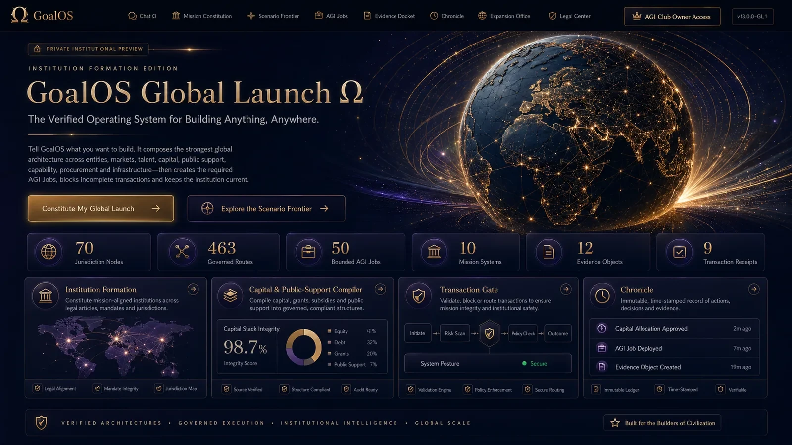

Market
Customer access, procurement, localization and regulatory fit.
Principle
Founded in Montréal · 2003 · Founder-controlled
Where to sell. Hire. Build. Fund. Own IP. Deploy.
GJFFI turns a global objective into a comparable architecture of jurisdictions, entities, talent, capital, intellectual property, infrastructure and continuing obligations. It exposes assumptions, dates, sources, limits and required human decisions.
Intelligence proposes. Licensed professionals confirm. The principal accepts.
Comparison framework
A score is never the final product. The architecture links every dimension to objective, risk, evidence, professional authority and switching cost.
Customer access, procurement, localization and regulatory fit.
PrincipleAvailability, immigration, employment structure and total cost.
PrincipleOwnership, governance, liability, reporting and banking.
PrincipleGrants, procurement, equity, debt, incentives and timing.
PrincipleOwnership, licensing, tax, export control and enforcement.
PrincipleCompute, energy, facilities, data, security and resilience.
PrincipleCorporate tax, credits, indirect tax, payroll and compliance.
PrincipleChange monitoring, renewal, filings and exit or migration paths.
PrincipleProfessional boundary
GJFFI prepares questions, options, sources, assumptions and dockets. It does not replace the lawyer, tax adviser, accountant, broker, financial adviser or competent public authority.
Discovers, structures, compares, documents and updates.
Interprets law, confirms applicability and acts under engagement.
Supplies facts, decides risk and accepts or rejects.
Preserves sources, dates, assumptions, contradictions and decisions.
Source traceability
This page synthesizes the records below without converting publication into external validation or production outcome.
GoalOS Global Jurisdiction, Funding & Fiscal Intelligence Ω (GoalOS GJFFI Ω) determines where to sell, hire, build, fund, own IP & deploy infrastructure—then composes a maximum-impact, evidence-gated global architecture. New paper
Open record →03GoalOS Global Launch Ω Paper: https://montrealai.github.io/goalos-global-launch-omega-agi-club-owner-access-v1/research/GoalOS_Global_Launch_Omega_Paper_v4_0_0.pdf Paper : https://montrealai.github.io/goalos-global-launch-omega-ag
Open record →12THE VALUE OF AI IS NOT THE OUTPUT. IT IS THE QUALITY OF THE DECISION IT ENABLES. Introducing the GoalOS Value Realization Dossier Ω: Three Consequential Use Cases for Proof-Governed Economic Value Not every objective deserves Goal
Open record →Provide the objective, activities, people, assets, markets, capital and horizon; evidence will determine which questions require professional confirmation.